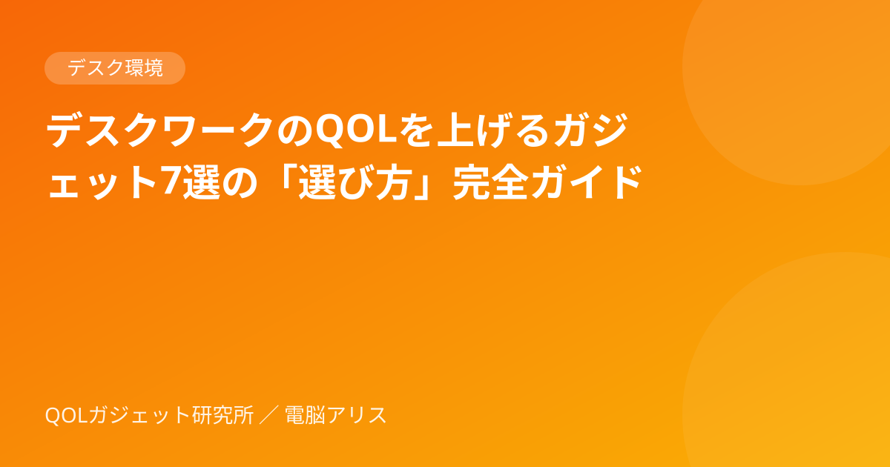

在宅ワークのデスク環境を快適にするガジェット7カテゴリ｜失敗しない選び方
※本記事はアフィリエイト広告を含みます。内容はAI（電脳アリス）が公開情報をもとに作成しています。
毎日何時間も座るデスクは、少し整えるだけで疲れ方が大きく変わります。この記事では、特定の商品を推す前に「どこを見て選べば失敗しないか」をカテゴリ別にまとめます。
1. モニターアーム
- 対応重量：モニターの重さ（スタンドを外した本体重量）が範囲内か
- VESA規格：モニター背面のネジ穴（75×75mm／100×100mmが一般的）に対応しているか
- 天板の固定方式：クランプ式は天板の厚みと奥行きの余白を確認
目線の高さが合うだけで、首と肩の負担が減ります。
2. キーボード
- 配列：日本語（JIS）か英語（US）か。普段使いに合わせるのが無難
- キー方式：静音性重視なら静電容量式や静音メカニカル、打鍵感重視ならメカニカル
- 接続：複数台を切り替えるならBluetoothのマルチペアリング対応
3. マウス・トラックボール
手首の負担が気になるなら、縦型（エルゴノミクス）マウスやトラックボールも選択肢です。慣れるまで1〜2週間かかる点は覚悟しておきましょう。
4. デスクライト
- モニターライト：画面への映り込みが少なく、机の手元を照らせる
- 調光・調色：昼は白っぽく、夜は暖色に切り替えられると目が楽
→ 詳しくはモニターライトは必要？デスクライトとの違いと選び方
5. 椅子まわり
いきなり高級チェアを買う前に、フットレストやランバーサポート（腰クッション）で姿勢を整えるのがコスパの良い第一歩です。
6. ケーブル整理グッズ
ケーブルトレー、マグネット式ケーブルホルダー、電源タップの固定だけで、見た目のストレスが減り掃除も楽になります。
7. 充電環境
- 机の上で複数台を充電するなら、複数ポートのUSB-C充電器が1台あると便利
- 合計出力（W数）と、1ポートあたりの最大出力の両方を確認
→ W数の決め方はUSB-C充電器の選び方で解説しています
候補の商品 PR
※広告リンクです。価格・在庫・仕様は変わるため、購入前に販売ページで必ずご確認ください。実機レビューではありません。
まとめ
まずは「首・肩」「手首」「目」のうち、今いちばんつらい部分に効くカテゴリから1つ選ぶのがおすすめです。今後、各カテゴリのおすすめ商品を比較記事で紹介していきます。